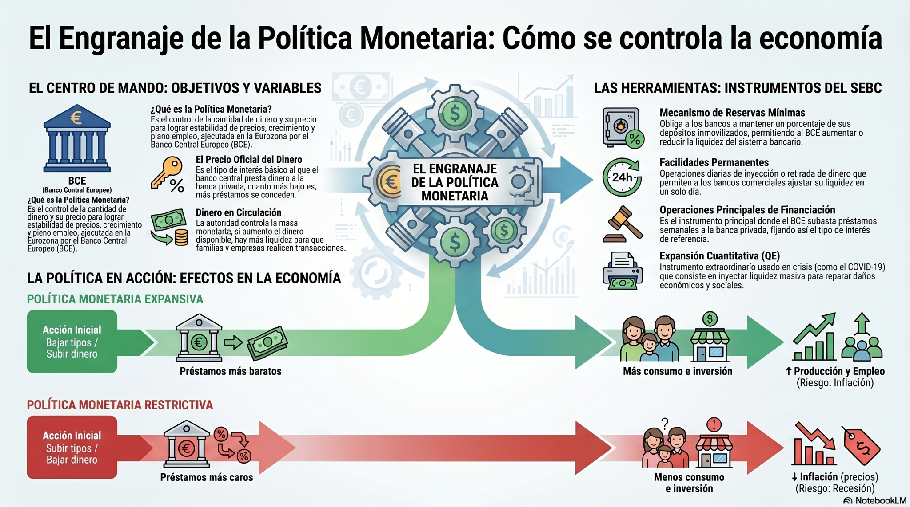
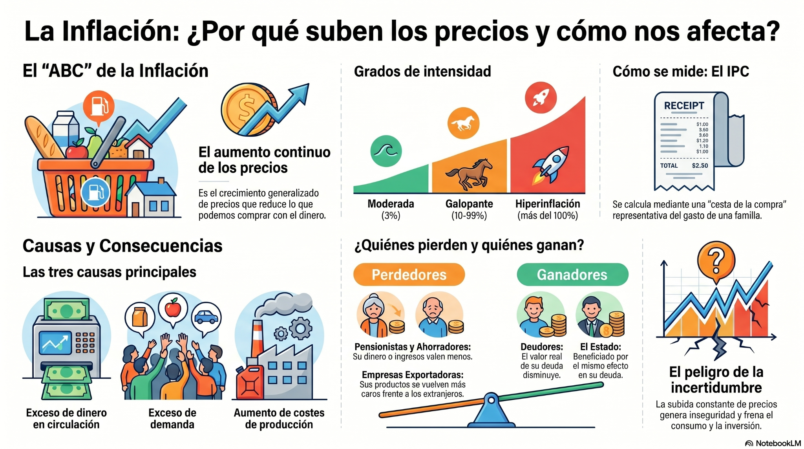

Política monetaria e inflación
Antes de comenzar la unidad, visualiza el vídeo resumen para obtener una visión global de los conceptos más importantes. Después, consulta el esquema y desarrolla los contenidos siguiendo el orden propuesto.
Infografías de apoyo


Esquema de la unidad
1. El dinero
Más que papel o metal, el dinero funciona porque la sociedad confía en que será aceptado como medio de pago.
¿Qué es el dinero?
El dinero es un medio de cambio o de pago y cobro universal. Permite evitar el trueque y facilita que familias, empresas y sector público realicen intercambios de forma rápida.
Funciones del dinero
Medio de intercambio
Permite comprar y vender bienes sin necesidad de encontrar a alguien que quiera intercambiar exactamente lo que ofrecemos.
Ejemplo: pagas un bocadillo con 3 €, no con otro bien.
Unidad de cuenta
Expresa el valor de bienes, servicios, salarios, deudas o impuestos en una misma unidad: euros.
Ejemplo: comparar un móvil de 300 € con unas zapatillas de 80 €.
Depósito de valor
Permite guardar riqueza para utilizarla más adelante, aunque la inflación puede reducir su poder adquisitivo.
Ejemplo: ahorrar 50 € para comprar algo el mes próximo.
Del trueque al euro
El dinero reduce costes de búsqueda, facilita los intercambios y permite valorar todos los bienes en una unidad común.
Dinero legal
Billetes y monedas emitidos por el banco central. Es el efectivo físico.
Dinero bancario
Depósitos en cuentas bancarias que usamos con tarjeta, transferencia o Bizum.
Criptomonedas
Activos digitales privados basados en criptografía y blockchain. No son dinero legal emitido por un banco central.
Actividad
Explica por qué el dinero facilita más los intercambios que el trueque. Debes usar las tres funciones del dinero y aportar un ejemplo cotidiano.
El dinero facilita los intercambios porque actúa como medio de cambio aceptado por todos, evitando que dos personas tengan que querer exactamente lo que la otra ofrece. Además, funciona como unidad de cuenta porque permite comparar precios en euros, y como depósito de valor porque permite ahorrar para consumir en el futuro. Por ejemplo, una familia puede cobrar su salario en euros, comparar precios en el supermercado y reservar una parte para pagar una reparación más adelante.
2. La creación de dinero bancario
Los bancos no solo guardan dinero: mediante depósitos y préstamos contribuyen a multiplicar el dinero bancario.
Reserva fraccionaria
Cuando una persona deposita dinero en un banco, la entidad no mantiene todo el importe inmovilizado. Debe conservar una parte como reservas y puede prestar el resto a otros agentes económicos.
1.000 €
100 €
900 €
900 €
Riesgo: pánico bancario
Si muchos depositantes intentan retirar su dinero al mismo tiempo, el banco puede tener problemas de liquidez porque una parte de los depósitos se ha transformado en préstamos. Por eso existen supervisión bancaria, bancos centrales y fondos de garantía de depósitos.
Actividad
Una familia deposita 2.000 € en un banco. Si el coeficiente de caja es del 10 %, explica cuánto debe mantener el banco como reserva, cuánto puede prestar y por qué ese préstamo puede generar nuevo dinero bancario.
El banco debe mantener el 10 % como reserva, es decir, 200 €. Puede prestar los 1.800 € restantes. Si quien recibe el préstamo lo gasta y ese dinero acaba ingresado en otro banco, se convierte en un nuevo depósito. A partir de ese depósito, el segundo banco conservará una parte como reserva y prestará el resto. Así se produce un efecto multiplicador del dinero bancario dentro del sistema financiero.
3. Moneda digital, criptomonedas y blockchain
La digitalización ha cambiado la forma de pagar, ahorrar e invertir, pero no todos los activos digitales tienen la misma seguridad ni la misma función económica.
Pagos digitales
Tarjetas, transferencias o Bizum usan dinero bancario. El dinero está en cuentas supervisadas por entidades financieras.
Criptomonedas
Son activos digitales privados. Su precio puede variar mucho y no están respaldados por un banco central.
Blockchain
Registro descentralizado donde se anotan operaciones de forma verificable. Puede usarse en criptomonedas y otros ámbitos.
Actividad
¿Aceptarías cobrar tu salario mensual en Bitcoin? Razona tu respuesta teniendo en cuenta estabilidad, riesgo, poder adquisitivo y confianza.
No sería una decisión prudente para la mayoría de familias porque el salario sirve para pagar gastos recurrentes como vivienda, alimentación o transporte. Si se cobra en un activo muy volátil, el poder adquisitivo puede variar bruscamente. Las criptomonedas pueden tener interés como innovación tecnológica o activo de inversión, pero no cumplen con la misma estabilidad que el dinero legal o bancario utilizado diariamente.
4. El tipo de interés
El interés es el precio del dinero: lo que se paga por pedir prestado o lo que se recibe por prestar o ahorrar.
¿De qué depende?
Cuanto mayor sea la probabilidad de impago, mayor interés exigirá el prestamista.
Cuanto más tiempo se tarda en devolver el dinero, mayor suele ser el coste financiero.
Si el dinero queda inmovilizado durante mucho tiempo, se exige compensación.
El BCE influye en el coste al que los bancos obtienen liquidez.
Si suben los tipos...
Los préstamos se encarecen, bajan consumo e inversión y se reduce la presión sobre los precios.
Actividad
Explica por qué una tarjeta de crédito suele tener un interés más alto que una hipoteca.
La tarjeta de crédito suele tener un interés superior porque el riesgo para el banco es mayor: normalmente no existe una garantía real equivalente a la vivienda hipotecada. En una hipoteca, si el prestatario no paga, el banco dispone de una garantía sobre el inmueble. Además, los importes, plazos y condiciones están más estructurados, por lo que el riesgo relativo suele ser menor.
5. Precios e inflación
La inflación es el crecimiento generalizado y continuo de los precios. Su efecto principal es la pérdida de poder adquisitivo.
Inflación monetaria
Se produce cuando aumenta excesivamente la cantidad de dinero en circulación respecto a los bienes disponibles.
Inflación de demanda
Aparece cuando familias, empresas o sector público quieren comprar más de lo que la economía puede producir.
Inflación de costes
Surge cuando suben materias primas, energía, salarios u otros costes y las empresas trasladan esa subida al precio final.
Perjudicados
- Familias con salarios fijos: compran menos con el mismo ingreso.
- Ahorradores: el dinero pierde valor real.
- Empresas con costes crecientes: reducen márgenes si no pueden subir precios.
Beneficiados
- Deudores a tipo fijo: devuelven dinero con menor valor real.
- Estado endeudado: la deuda pierde peso real si los ingresos nominales aumentan.
- Algunos sectores pueden trasladar precios sin perder ventas.
Actividad
Clasifica cada caso: subida del petróleo, aumento fuerte del consumo por ayudas públicas y exceso de creación de dinero por parte del banco central.
La subida del petróleo genera inflación de costes porque encarece la producción y el transporte. El aumento fuerte del consumo por ayudas públicas puede generar inflación de demanda si la oferta no crece al mismo ritmo. El exceso de creación de dinero puede provocar inflación monetaria, ya que hay más dinero compitiendo por una cantidad limitada de bienes y servicios.
6. El IPC y la cesta de la compra
El IPC mide la evolución de los precios mediante una cesta representativa del consumo de los hogares.
Cómo se mide la inflación
El Instituto Nacional de Estadística calcula el IPC observando el precio de una cesta de bienes y servicios representativa. La tasa de inflación compara el IPC o el coste de la cesta entre dos periodos.
Ejercicio de cálculo
| Producto | Cantidad | 2024 | 2025 |
|---|---|---|---|
| Pan | 20 barras | 1,00 € | 1,15 € |
| Leche | 30 l | 0,90 € | 1,05 € |
| Huevos | 10 docenas | 2,20 € | 2,50 € |
| Pollo | 8 kg | 6,50 € | 7,40 € |
| Fruta | 25 kg | 1,80 € | 2,10 € |
Actividad
Calcula el coste total de la cesta en 2024 y 2025. Después calcula la variación porcentual e interpreta si existe inflación.
Coste 2024: pan 20 €, leche 27 €, huevos 22 €, pollo 52 €, fruta 45 €. Total: 166 €. Coste 2025: pan 23 €, leche 31,50 €, huevos 25 €, pollo 59,20 €, fruta 52,50 €. Total: 191,20 €. La variación es ((191,20 − 166) / 166) × 100 = 15,18 %. Existe inflación porque la cesta representativa cuesta más; la familia necesita más dinero para comprar la misma cantidad de productos, por lo que pierde poder adquisitivo si sus ingresos no aumentan en la misma proporción.
7. El BCE y la política monetaria
El Banco Central Europeo decide la política monetaria de la zona euro para mantener la estabilidad de precios.
Objetivo principal
El BCE busca mantener la estabilidad de precios. Para ello controla el precio oficial del dinero y la cantidad de dinero en circulación, influyendo en préstamos, consumo, inversión, empleo e inflación.
Instrumentos
🔐 Reservas mínimas: porcentaje que los bancos deben mantener inmovilizado.
🏦 Facilidades permanentes: operaciones de liquidez a muy corto plazo.
📄 Operaciones principales de financiación: préstamos del BCE a bancos.
🖨️ Expansión cuantitativa: compra de activos para inyectar liquidez.
Política expansiva
Baja tipos y aumenta liquidez. Facilita préstamos, consumo e inversión. Puede elevar producción y empleo, pero si se aplica en exceso puede generar inflación.
Política restrictiva
Sube tipos y reduce liquidez. Enfría consumo e inversión para frenar la inflación, pero puede reducir producción y empleo si se aplica con demasiada intensidad.
Actividad
Si la inflación es del 15 %, ¿qué política debería aplicar el BCE? Explica instrumentos y consecuencias.
Con una inflación del 15 %, el BCE debería aplicar una política monetaria restrictiva. Podría subir el precio oficial del dinero, encareciendo los préstamos a bancos y familias. También podría reducir la liquidez mediante operaciones de financiación más restrictivas o elevar las reservas mínimas. El objetivo sería reducir crédito, consumo e inversión para disminuir la presión de demanda sobre los precios. El riesgo es que la economía se enfríe demasiado y aumente el desempleo, por lo que la decisión debe ser gradual y basada en datos.
Actividades para practicar · Política monetaria
Caso competencial completo con orientaciones para preparar una respuesta de calidad.
Actividad competencial: ¿Qué harías si fueras presidenta del BCE?
Debes analizar precios, calcular inflación, interpretar consecuencias y justificar una decisión de política monetaria. La respuesta debe incluir cálculos, diagnóstico, tipo de inflación, agentes afectados, instrumentos del BCE y valoración de riesgos.
El análisis muestra una subida relevante del coste de la cesta de la compra, por lo que puede hablarse de inflación. Si el incremento es cercano al 15 %, el problema principal no es una falta de actividad, sino una pérdida de estabilidad de precios que reduce el poder adquisitivo de las familias. Esta inflación puede perjudicar especialmente a personas con salarios o pensiones que no aumenten al mismo ritmo, y también a ahorradores que mantengan dinero líquido. En cambio, algunos deudores a tipo fijo pueden beneficiarse porque devuelven préstamos con dinero de menor valor real.
Ante este escenario, el BCE debería aplicar una política monetaria restrictiva. La medida principal sería subir el precio oficial del dinero para encarecer el crédito. Si los préstamos son más caros, familias y empresas tenderán a reducir consumo e inversión, disminuyendo la presión de demanda sobre los precios. Además, el BCE puede controlar la liquidez a través de sus operaciones principales de financiación, las facilidades permanentes y las reservas mínimas. La decisión debe comunicarse con prudencia porque una subida excesiva de tipos puede provocar caída de inversión, menor crecimiento y más desempleo. Por tanto, la política correcta sería restrictiva, pero gradual, evaluando continuamente los datos de inflación y actividad económica.
PDF de la actividad
Repaso tipo test · Política monetaria
Sistema adaptativo: las preguntas falladas vuelven antes; las acertadas se espacian hasta considerarse dominadas.
Mi progreso
El progreso se guarda automáticamente en este dispositivo mediante LocalStorage.